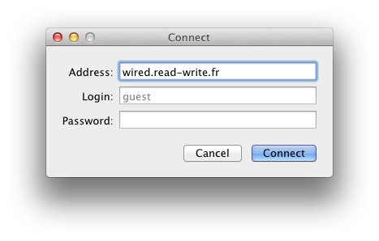

Wired Client for Mac OS X
Wired Client is a native Mac OS X client, designed using Cocoa. It features full support and compatibility with the Wired protocol and the Wired server, with an interface that is as ingenious as it is easy to use.
Wired Client runs on Mac OS X 10.6, and is a application that runs natively on Intel Macs.
2.1. Installation
To install Wired Client, download the latest version from http://www.read-write.fr/wired?page=1. Unpack the archive, and drag the resulting file to any directory on the hard drive, for example, the Applications folder.
2.1.1. Uninstallation
To uninstall Wired Client, delete the file from where you installed it.
2.2. Connectiong To Servers
To connect to a Wired server, you can use the connect window, the trackers window, or a bookmark.

The connect window is accessed using "Connect" on the connection menu. Enter a server hostname, and any login information needed. Most server accept a blank login via a guest account. Hit "Connect" to start the connection.
One connect window is displayed per connection. To cancel a connection, hit "Cancel" or just close the window. If you become disconnected from a server, you can select "Reconnect" from the connection menu to bring up the connect window again and reconnect to the server.
To connect to a previously saved bookmark, select it from the bookmarks menu.
See 2.4 for a description on how the trackers window works.
TO-DO